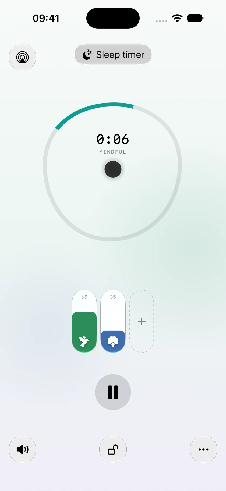
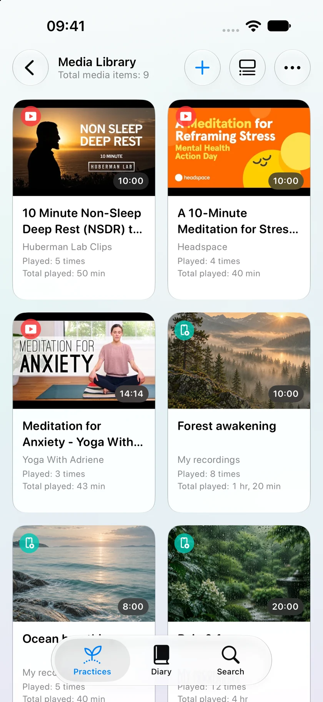
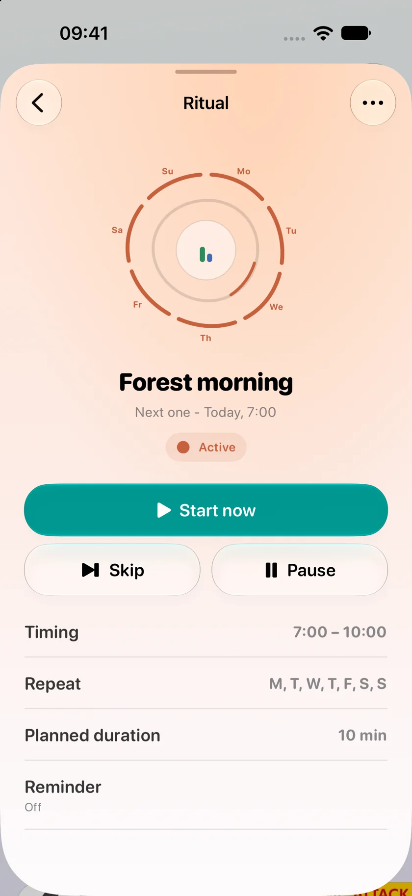
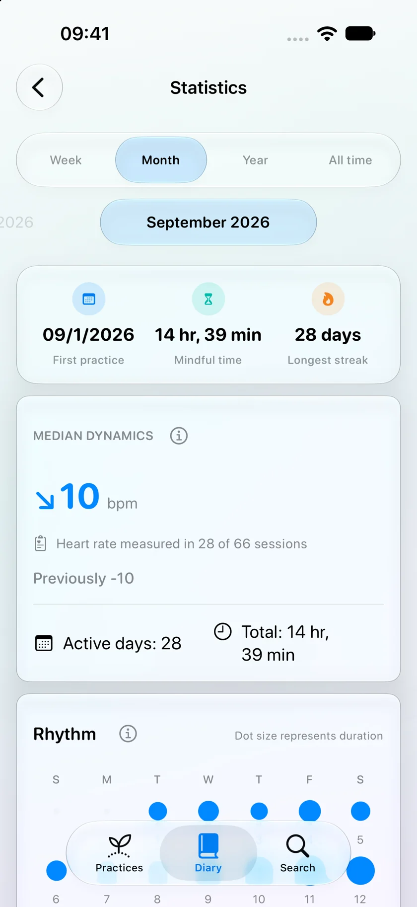
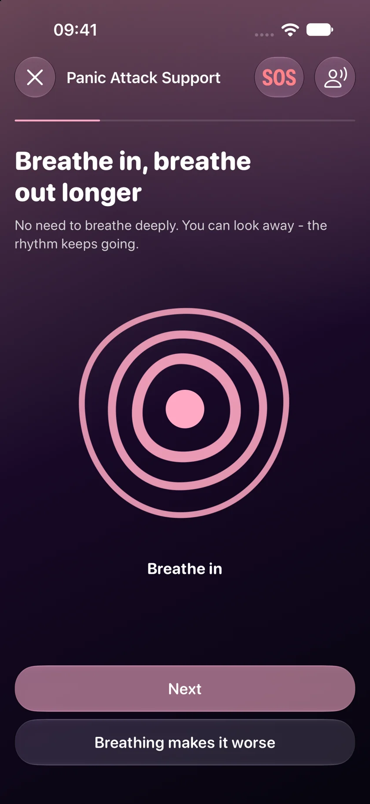
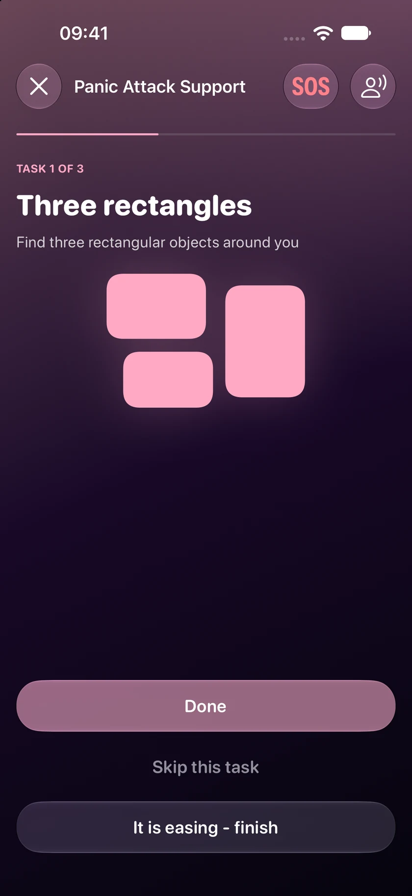
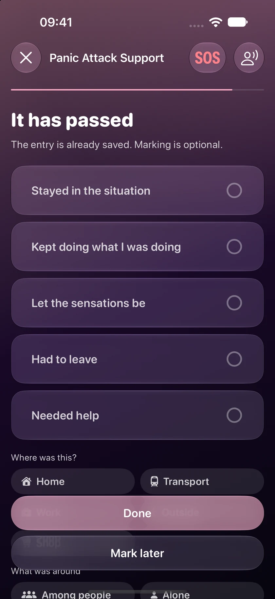
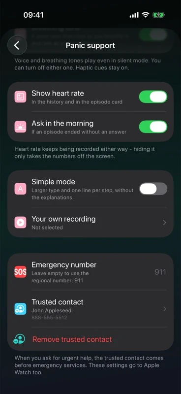
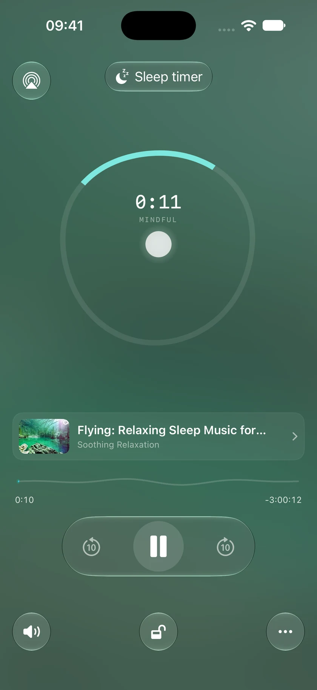

YOUR OWN SOUNDSCAPESounds of nature.
Sounds of nature.
Your own mix.
Mix rain, waves, forest and a campfire. Adjust each sound and save your mix. Built-in sounds work offline.
Explore relaxing soundsSelf is a free meditation and relaxing sounds app for iPhone, iPad and Apple Watch. Mix your sounds, build a daily practice and find support during panic attacks.

Messages, deadlines, news. Sometimes you just need a moment to catch your breath.
Put on a familiar sound and listen for a minute. If your mind wanders, gently come back to it.
Mix your own soundsPlay a favourite track and take a pause before moving on with your evening. Set a reminder in Self to make it a habit.
Create a daily ritualPut on rain, waves or your own audio. Set a sleep timer and put the screen aside.
Find your evening soundsChoose a trusted contact and favourite audio in advance. During an attack, breathing prompts, grounding exercises and a way to call them are close at hand.
See how Self can support youChoose your sounds, add your favourite recordings and practise when it suits you.
Mix rain, waves, forest and a campfire. Adjust each sound and save your mix. Built-in sounds work offline.
Explore relaxing soundsAdd audio, videos, recordings and YouTube links. Organise them into categories and keep your favourites close.


A quiet morning, a break between meetings or a pause before bed. Choose the days and time for your ritual; Self will remind you.
Transfer your audio to Apple Watch and listen without your phone or an internet connection. Your sessions sync to iPhone later.
Meditation on Apple Watch
See how much time you have spent practising and how your heart rate changed during sessions with Apple Watch.

Heart-rate tracking needs Apple Watch and Health permission. Readings are for reference and cannot diagnose a condition.
Your heart races, you tremble or feel short of breath. A panic attack can happen even when there is no clear danger.
Self does not replace medical care. If attacks recur or symptoms are new or severe, speak to a doctor.
Learn more · NIMHWhen it is hard to know what to do, follow one simple step at a time, at your own pace.
Explore panic attack supportFollow the animation or voice prompts to breathe in and out. If it feels uncomfortable, switch to grounding.

Look at nearby objects, listen to sounds, feel your feet on the floor. Repeat or skip any step.

Note what happened and how long it lasted. Save a note and available heart-rate data. Look back later or export a PDF or CSV with the details you choose.

Optional voice prompts.
On iPhone and Apple Watch.
SET THINGS UP WHEN YOU FEEL CALM
Choose a trusted contact in advance. During an attack, start a call from Self without searching for their number.

Choose audio, a video or a sound mix in advance. During an attack, open it from the support screen.

All features are free. No subscription.
Build a library of audio, videos and recordings you want to come back to.
Transfer your favourite audio to your watch. Start it before bed and leave your phone in another room.
Listen to built-in sounds and saved media offline. YouTube needs an internet connection.